ChatGPT
ChatGPT dodatak omogućava analizu, sumiranje i prevođenje izabranog teksta, generisanje slika, pronalaženje sinonima i korišćenje OpenAI chatbota za zadatke koji uključuju razumevanje ili generisanje prirodnog jezika ili koda.
Od ONLYOFFICE Docs 8.2 verzije, editori više ne dolaze sa preinstaliranim dodacima. Dodaci se instaliraju putem Plugin Manager-a.
Instalacija
Da biste instalirali ChatGPT dodatak,
- Idite na karticu Dodaci.
- Otvorite Plugin Manager.
-
Pronađite ChatGPT na marketplace-u i kliknite na dugme Instaliraj.
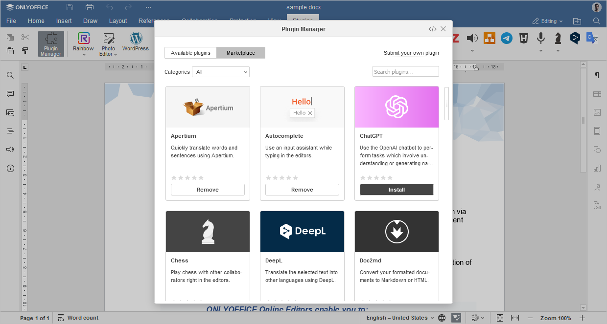
- Desnim tasterom kliknite bilo gde u dokumentu i pronađite ChatGPT u kontekstualnom meniju.
-
Kliknite Podešavanja da nastavite sa konfiguracijom dodatka.
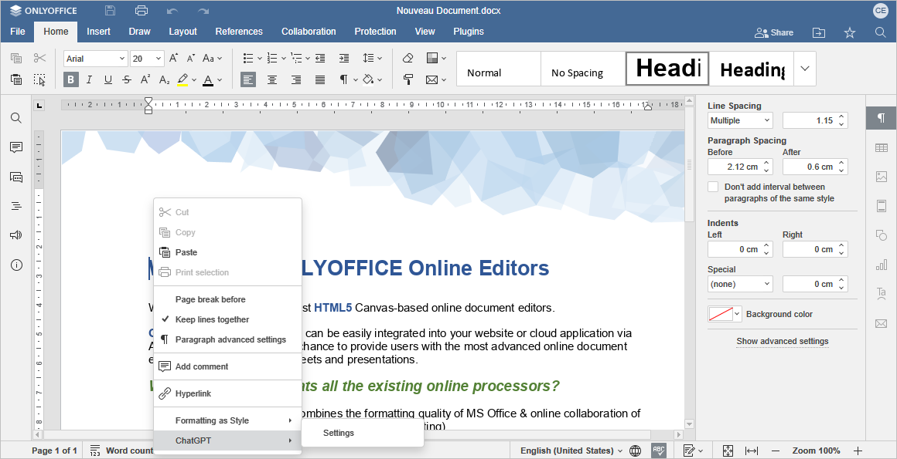
Konfiguracija
- Napravi svoj API ključ na stranici OpenAI API ključeva.
- Kopirajte generisani API ključ u odgovarajuće polje u prozoru Podešavanja.
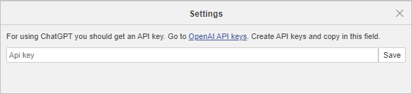
Korišćenje
ONLYOFFICE ne preuzima odgovornost za sadržaj koji ChatGPT generiše, uključujući moguće greške, propuste ili uvredljiv sadržaj. Informacije koje plugin generiše pružaju se "takve kakve jesu" bez dodatne filtracije od strane ONLYOFFICE-a.
Nakon instalacije, ChatGPT će biti dodat u kontekstualni meni. Sve funkcije ChatGPT-a dostupne su desnim klikom. Selektujte deo teksta ili reč da pristupite kontekstualnom meniju i izaberete jednu od opcija: Analiza teksta, Analiza reči, Prevod, Generisanje slika, Sinonimi, Chat i Prilagođeni zahtev.
Analiza teksta
Funkcija Analiza teksta uključuje dve opcije: Sumiranje i Ključne reči.
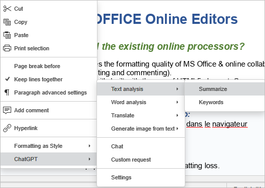
- Sumiranje generiše i umeće sažetu verziju izabranog teksta.
- Ključne reči prepoznaje ključne tačke i izvlači ključne reči iz izabranog teksta.
Rezultat se pojavljuje ispod teksta.
Analiza reči
Funkcija Analiza reči nudi dve opcije: Objasni tekst u komentaru i Objasni tekst u linku.
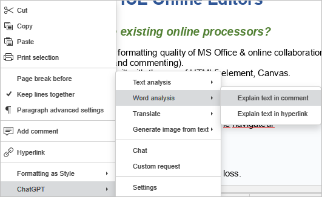
- Objasni tekst u komentaru daje definiciju izabrane reči u sekciji komentara.
- Objasni tekst u linku omogućava umetanje linka u izabranu reč. Taj link vodi ka stranici koja detaljno objašnjava izabranu reč ili frazu.
Prevod na francuski ili nemački
Opcija Prevod omogućava prevođenje izabranog teksta na francuski ili nemački jezik. Prevod zamenjuje originalni tekst.
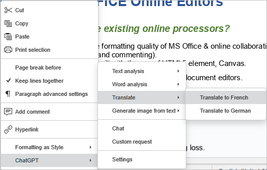
Generisanje slike
Opcija Generiši sliku iz teksta omogućava kreiranje slike na osnovu izabranog teksta. Možete odabrati odgovarajuću veličinu slike iz ChatGPT kontekstualnog menija.
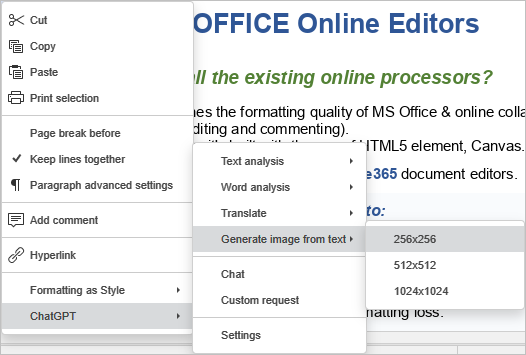
Sinonimi
Opcija Sinonimi omogućava generisanje sinonima za izabranu reč.
Desnim klikom na reč i izborom opcije Sinonimi u ChatGPT meniju otvara se lista sinonima.
Opcija Objasni tekst u komentaru takođe postaje dostupna desnim klikom na reč. Objašnjenje se pojavljuje u desnom panelu Komentara.
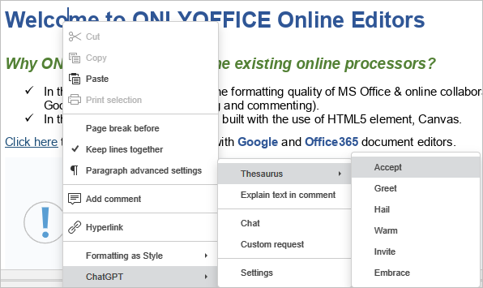
Chat
Integracija ChatGPT-a u kontekstualni meni omogućava pokretanje Chata bilo gde u dokumentu. Koristite chatbota za interakciju, postavljanje pitanja i dobijanje odgovora.
Izaberite opciju Chat u ChatGPT meniju i započnite konverzaciju u tekstualnom okviru na dnu ChatGPT prozora.
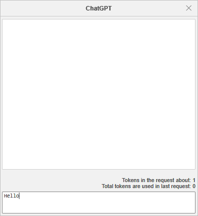
Prilagođeni zahtev
Opcija Prilagođeni zahtev omogućava tokenizaciju prirodnog jezika ili koda. Alat pretvara unos u listu tokena, obrađuje zahtev, vraća generisane tokene u tekstualni oblik i ubacuje rezultat u dokument.
- Da biste napravili prilagođeni zahtev, idite u ChatGPT meni i kliknite Prilagođeni zahtev.
-
U polju OpenAI unesite tekst koji želite da tokenizujete. Alat prikazuje ukupan broj tokena u tekstu.
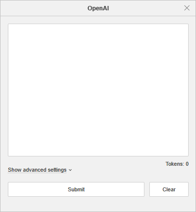
-
Kliknite Prikaži napredna podešavanja da konfigurišete parametre zahteva:
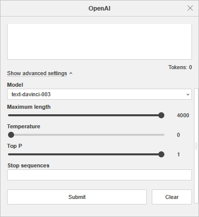
- Model - model koji će generisati odgovor. Neki modeli su prikladni za prirodni jezik, drugi za kod. Više informacija potražite na službenom sajtu ChatGPT-a.
- Maksimalna dužina - maksimalan broj tokena u generisanom odgovoru.
- Temperatura - parametar koji kontroliše nasumičnost, niža vrednost rezultuje manje slučajnim odgovorima. Kako temperatura teži nuli, odgovor postaje deterministički i ponavljajući.
- Top P - alternativa temperaturi, tzv. nucleus sampling, gde model uzima u obzir rezultate tokena sa top_p verovatnoćom.
- Stop sekvence - do četiri sekvence gde API prestaje sa generisanjem. Povratni tekst neće sadržati stop sekvencu.
- Kliknite Pošalji da obradite tekst, ili Obriši da unesete novi zahtev.